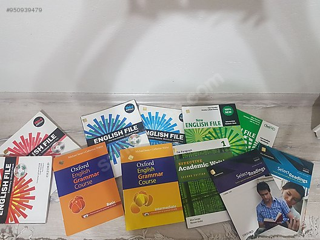

Almanca

Almanca dilini öğrenmek için en güvenilir kaynak Goethe Üniversitesi kaynaklarını kullanmaktır. Ayrıca İngilizce dilinde de olduğu gibi ana dili Almanca olan Almanlarla iletişime geçmektir.
Merhaba, ben Eldar! Beylikdüzü'de yaşıyorum. Yeni dilleri öğrenmeye bayılıyorum! İngilizce dilinin yanı sıra Almanca ve Fransızca dillerini de orta seviyede kullanmaktayım. Ayrıca bilgisayar dillerine de bayılıyorum. Bu yüzden web geliştirme ile ilgileniyorum. Kodluyoruz'un bu eğitim serisi sayesinde harika şeyler öğrendim ve öğrenmeye devam ediyorum! Siz de aramıza katılın!

İngilizce ortalama dünya üzerinde 2 milyardan aşkın kişi tarafından aktif olarak kullanılmaktadır. 21. yüzyılda İngilizce bilmeden yaşamak neredeyse imkansızdır. Benim için ilgili öğrenmekte etkili olan şeyler Oxford ve Cambridge gibi akredite ve top 10'a girmiş olan üniversitelerin kaynaklarını kullanarak dil bilgisini öğrenmektir. Ayrıca ilgili dili bilen kişilerle iletişime geçmektir.
Ama Dikkat! Hem Türkçe hem de İngilizce bilen kişilerle değil sadece İngilizce bilen kişilerle iletişime geçmek önemlidir.
Almanca dilini öğrenmek için en güvenilir kaynak Goethe Üniversitesi kaynaklarını kullanmaktır. Ayrıca İngilizce dilinde de olduğu gibi ana dili Almanca olan Almanlarla iletişime geçmektir.

Fransızca bildiğimiz gibi çok feminen ve nazik bir dildir. Bu dili öğrenmek için genellikle ben burayı tercih ediyorum. Ayrıca internetten aynı şekilde arkadaşlar edinebilirsiniz.

Evet, öncellikle Rusça sadece S*ka, blyat ya da Vodka (lütfen bunları Ruslara söylemeyin, bu klişeler artık bunaltıcı) kelimelerinden ibaret değildir. Rusça içinde Aleksandr Sergeevich Pushkin ve Sergey Yesenin gibi güçlü yazarların olduğu kadimi ve güzel Slavyan dilidir. Rusça'yı birkaç kaynaktan öğrenebilirsiniz. Fakat çok zor bir dildir. Buraya tıklayarak Rusça öğrenmeye başlayabilirsiniz.